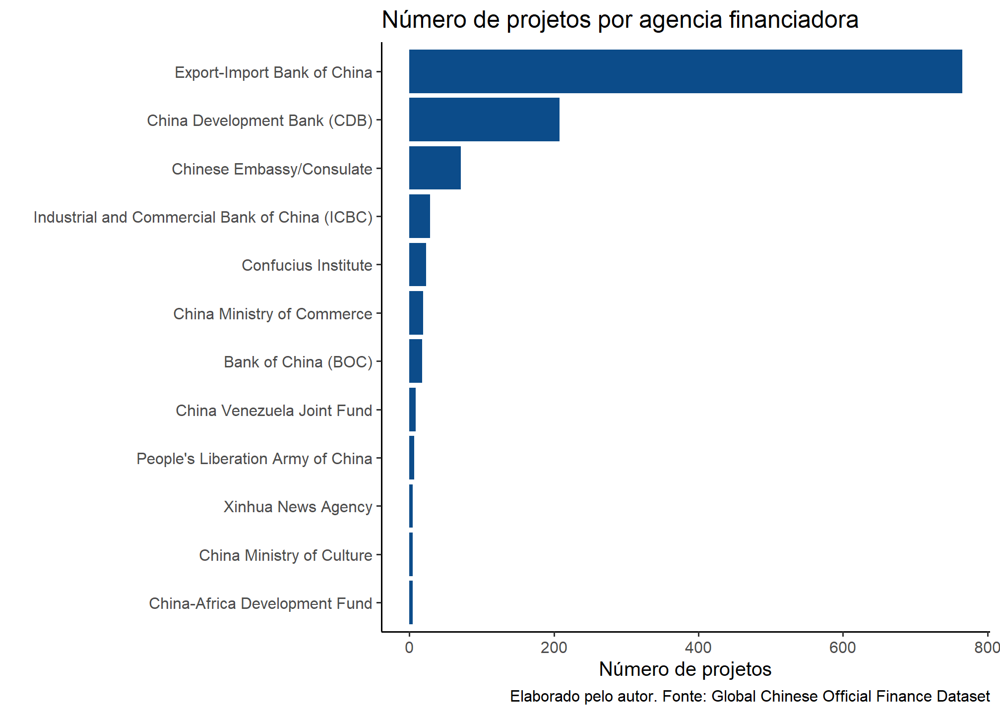
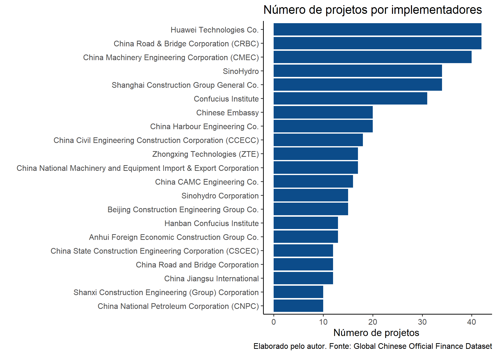
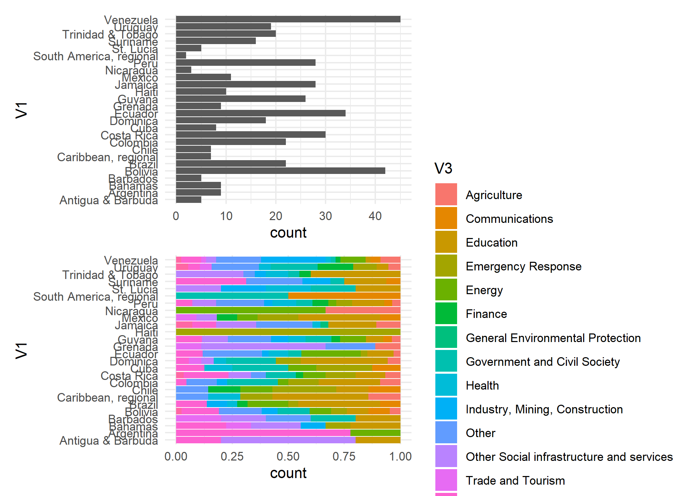

Objetivo: analisar o tamanho e características empréstimos e subsídios Chineses, notadamente, na América do Sul entre 2000 - 2014.
Desafio: we find that 50% of China’s lending to developing countries is not reported to the IMF or World Bank. (HORN; REINHART.; TREBESCH, 2015:7).
Dreher, A., Fuchs, A., Parks, B.C., Strange, A. M., & Tierney, M. J. (2017). Aid, China, and Growth: Evidence from a New Global Development Finance Dataset. AidData Working Paper #46. Williamsburg, VA: AidData.
"This dataset tracks the known universe of overseas Chinese official finance including foreign aid and other forms of concessional and non-concessional state financing — from China to 138 countries between 2000 and 2014.
Apresentaremos os dados sob a forma de estatística descritiva e mobilizaremos algumas medidas de Análise de Redes.
First, let’s load the packages:
dados_cross_bid <- here("static/files/dados.cross.csv") %>%
read_csv()
dados_GCOF <- here("static/files/GlobalChineseOfficialFinanceDataset_v1.0.xlsx") %>%
read_xlsx()Do total das 5466 observações salienta-se que 4235 projetos (77.48%) não tem identificação da origem do financiamento sob o rótulo Unspecified Chinese Government Institution. No entanto, dos projetos que a origem dos recursos podem ser identificados três stakeholders podem ser destacados: Export-Import Bank of China (765), China Development Bank (208), e Chinese Embassy/Consulate (71). O gráfico 1 apresenta o conjunto de entidades que financiaram acima de 5 projetos.
t <-table(dados_GCOF$funding_agency_1)
t <- as.data.frame(t)
t1 <- t %>%
filter(Freq %in% (5:765))
t1 %>%
mutate(Var1 = fct_reorder(Var1, Freq)) %>%
ggplot() +
aes(x = Var1, weight = Freq) +
geom_bar(fill = "#0c4c8a") +
coord_flip() +
labs(x = " ", y = "Número de projetos", title = "Número de projetos por agencia financiadora", caption = "Elaborado pelo autor. Fonte: Global Chinese Official Finance Dataset") +
theme_classic(base_size = 10)
A mesma dificuldade de rastreamento ocorre para a identificação dos implementadores sendo possível nomeá-los em apenas 1409 projetos. O Gráfico 2 apresenta esses resultados.
t2 <-table(dados_GCOF$implementing_agency_1)
t2 <- as.data.frame(t2)
t2 <- t2 %>%
filter(Freq %in% (10:765))
t2 %>%
mutate(Var1 = fct_reorder(Var1, Freq)) %>%
ggplot() +
aes(x = Var1, weight = Freq) +
geom_bar(fill = "#0c4c8a") +
coord_flip() +
labs(x = " ", y = "Número de projetos ", title = "Número de projetos por implementadores", caption = "Elaborado pelo autor. Fonte: Global Chinese Official Finance Dataset") +
theme_classic(base_size = 10)
Cabe considerar que, consideradas apenas as operações sem identificação de financiamento, ao rastrear os stakeholders implementadores dos projetos destacamos: i) Confucius Institute (31), ii) Shanghai Construction Group General Co (22) e iii) Chinese Embassy (20). A tabela 1 informa quais atores que mais implementaram projetos na categoria dos financiamentos não passíveis de rastreamento.
t3 <- dados_GCOF %>%
filter(funding_agency_1 == "Unspecified Chinese Government Institution") %>% # apenas os financiamentos não identificados
select(implementing_agency_1) # apenas a coluna de stk que implementaram
t4 <-table(t3)
t4 <- as.data.frame(t4)
datatable(t4)440 dos 5466 projetos tiveram a a “Latin America and the Caribbean” como destido. Abaixo a distribuição o anual dos projetos na região
p1 <- dados_GCOF %>%
filter(recipient_region %in% "Latin America and the Caribbean") %>%
ggplot() +
aes(x = year, fill = sector) +
geom_histogram(bins = 57L) +
labs(x = " ", y = "", title = "Número de projetos por ano e setor", caption = "Elaborado pelo autor. Fonte: Global Chinese Official Finance Dataset") +
scale_fill_hue() +
theme_classic(base_size = 10) +
facet_wrap(vars(recipient_region))
ggplotly(p1)Sobre a distribuição dos projetos por países setores na região “Latin America and the Caribbean”.
tab1 <- cbind(dados_GCOF$recipient_condensed, dados_GCOF$recipient_region, dados_GCOF$sector)
tab1 <- as.data.frame(tab1)
tab1 <- tab1 %>%
filter(V2 %in% "Latin America and the Caribbean")
tab1.tab <- table(tab1)
tab1.tab <- as.data.frame(tab1.tab)
cc1 <- ggplot(tab1) +
aes(x = V1) +
geom_bar() +
scale_fill_hue() +
coord_flip() +
theme_minimal()
cc2 <- ggplot(tab1) +
aes(x = V1, fill = V3) +
geom_bar(position = "fill") +
scale_fill_hue() +
coord_flip() +
theme_minimal()
cc1 / cc2